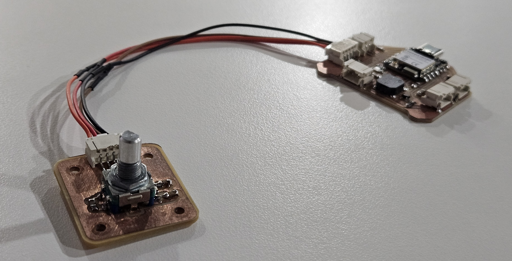
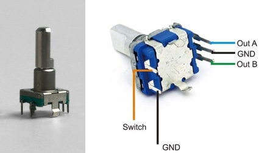
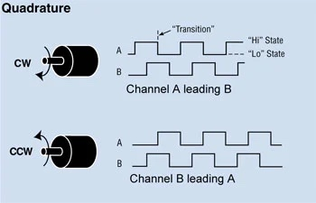
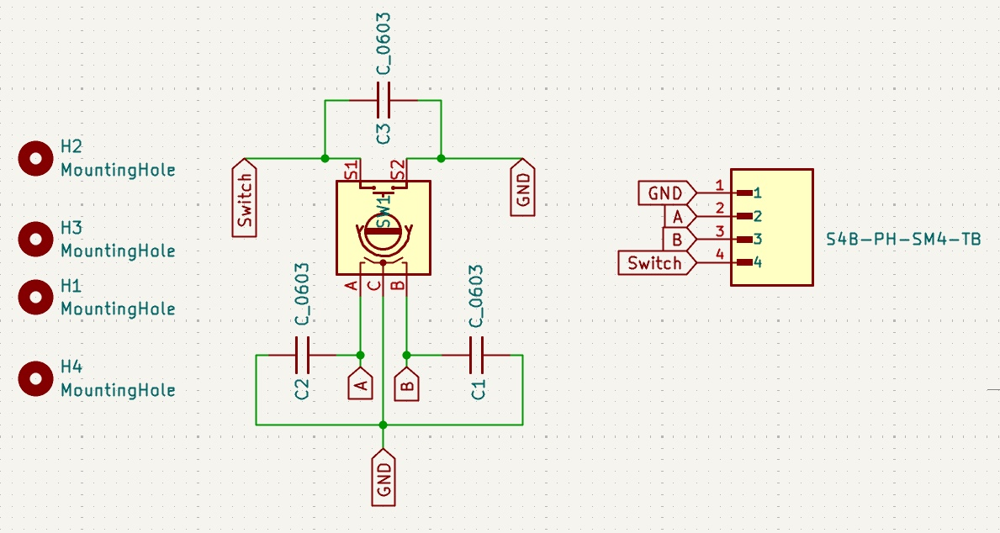
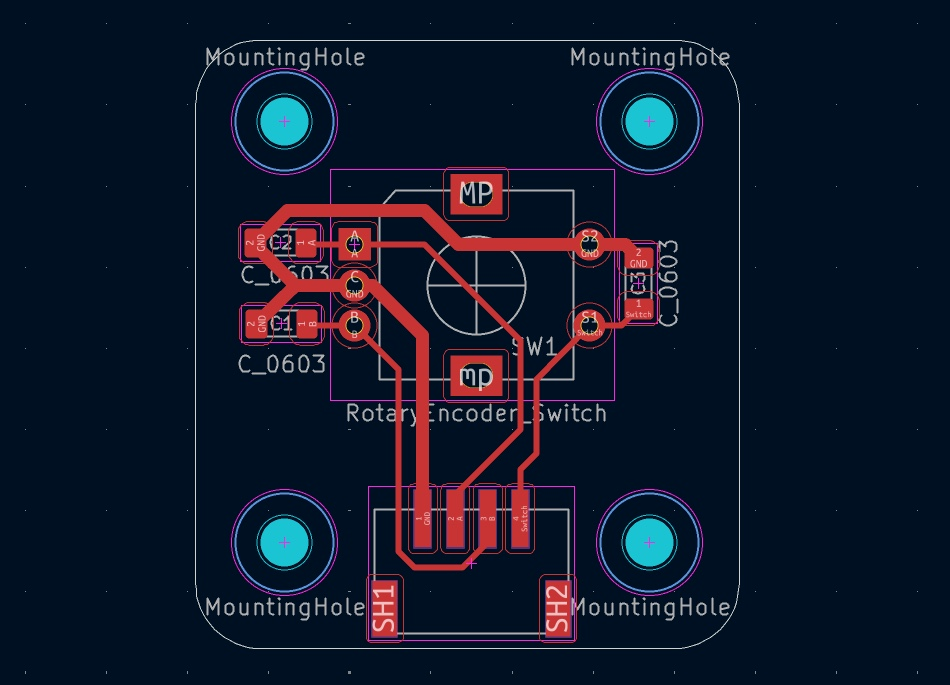
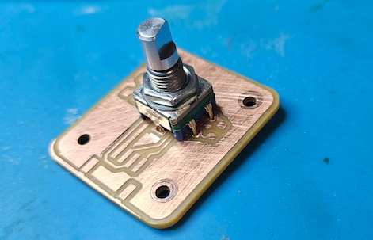
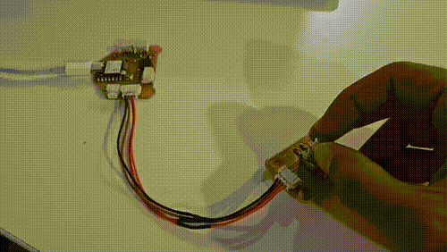
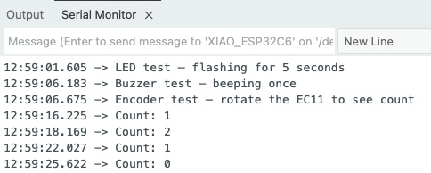

Input Devices — EC11 Rotary Encoder Breakout PCB
This week focused on input devices — understanding how sensors and encoders communicate with a microcontroller, designing a dedicated breakout PCB for the EC11 rotary encoder, and writing firmware to read and interpret the encoder signal.

What is a Rotary Encoder?
A rotary encoder is an electromechanical input device that converts the angular position or motion of a shaft into an electrical signal. Unlike a potentiometer, it has no start or end position — it can rotate continuously in either direction.
The EC11 is an incremental rotary encoder with a built-in push switch. It outputs two quadrature signals — A (CLK) and B (DT) — that are 90° out of phase with each other. By reading the order in which these signals change, the microcontroller can determine both the direction and speed of rotation.
The encoder also has a push switch (SW) that closes when the shaft is pressed down — useful as a mode toggle or confirmation input.

How Quadrature Encoding Works
As the encoder shaft rotates, pins A and B produce square waves that are offset by 90°. The relationship between the two signals at any transition tells you the direction of rotation:
- Clockwise: A changes first — when A falls, B is still HIGH
- Counter-clockwise: B changes first — when A falls, B is already LOW
In code, this is read by sampling pin B at the moment pin A changes state:
if (digitalRead(PIN_B) != currentA) {
direction = +1; // Clockwise
} else {
direction = -1; // Counter-clockwise
}Internal pull-up resistors on the microcontroller hold A and B HIGH at rest. The encoder pulls them LOW as the shaft rotates, generating the pulse train.

Schematic — EC11 Breakout Board
A dedicated breakout PCB was designed to house the EC11 encoder and expose its signals through a JST PH 6-pin connector, allowing it to connect cleanly to the test board via a cable.
The schematic includes 100nF debounce capacitors on the CLK, DT, and SW lines. These suppress the mechanical contact bounce that occurs each time the encoder's internal contacts make or break — without them, a single detent can register as multiple pulses and produce incorrect counts.
The capacitors work by forming an RC filter with the microcontroller's internal pull-up resistor, smoothing the rising and falling edges of the signal. No external resistors are needed since the ESP32-C6 provides sufficient pull-up resistance internally.

PCB Layout — EC11 Breakout Board
The PCB was kept minimal — the EC11 encoder, three 0603 debounce capacitors, and the JST connector are the only components. The layout follows a few key principles:
- Debounce capacitors placed as close as possible to the EC11 pads to maximise filtering effectiveness
- JST connector positioned at the board edge for easy cable access
- Traces routed at 0.4mm width with 45° bends to suit the milling process
- Board outline sized to fit within the final housing alongside the encoder shaft
A DRC (Design Rule Check) was run before export to confirm no clearance violations or unrouted nets remained.

Fabrication and Assembly
The breakout board was milled on the Carvera CNC using the same workflow as the test board from Week 8 — Gerber files exported from KiCad, converted to PNG via Gerber2PNG, toolpaths generated in Mods, and sent to the machine via Carvera Controller.
Assembly order followed standard SMD practice:
- Solder the three 0603 debounce capacitors first — smallest components go on before larger ones
- Solder the JST connector, checking alignment before reflowing both rows of pads
- Press-fit the EC11 encoder into its through-hole pads and solder all five pins
- Inspect under magnification for solder bridges, particularly on the JST connector pads
- Test continuity between each encoder pin and the corresponding JST pin before connecting to the test board

Connecting to the Test Board
The breakout board connects to the XIAO ESP32-C6 test board via a JST PH cable plugged into connector J2. The pin mapping is:
| JST Pin | Signal | ESP32-C6 GPIO |
|---|---|---|
| 1 | GND | GND |
| 2 | VCC | 3V3 |
| 3 | CLK (A) | GPIO1 |
| 4 | DT (B) | GPIO2 |
#define PIN_LED 22
#define PIN_BUZZ 17
#define PIN_A 1 // EC11 CLK → GPIO1
#define PIN_B 2 // EC11 DT → GPIO2
// ── Encoder state ───────────────────────────────────────
int lastA = 0;
int count = 0;
int pending = 0;
unsigned long lastPulse = 0;
const unsigned long GAP = 1000;
void setup() {
Serial.begin(115200);
pinMode(PIN_LED, OUTPUT);
pinMode(PIN_BUZZ, OUTPUT);
pinMode(PIN_A, INPUT_PULLUP);
pinMode(PIN_B, INPUT_PULLUP);
lastA = digitalRead(PIN_A);
// ── LED flash test: 5 seconds ───────────────────────
Serial.println("LED test — flashing for 5 seconds");
unsigned long start = millis();
while (millis() - start < 5000) {
digitalWrite(PIN_LED, HIGH);
delay(250);
digitalWrite(PIN_LED, LOW);
delay(250);
}
// ── Buzzer beep test ────────────────────────────────
Serial.println("Buzzer test — beeping once");
tone(PIN_BUZZ, 2730, 500);
delay(500);
noTone(PIN_BUZZ);
Serial.println("Encoder test — rotate the EC11 to see count");
}
void loop() {
int currentA = digitalRead(PIN_A);
if (currentA != lastA) {
pending = (digitalRead(PIN_B) != currentA) ? 1 : -1;
lastPulse = millis();
}
lastA = currentA;
if (pending != 0 && millis() - lastPulse >= GAP) {
count += pending;
pending = 0;
Serial.print("Count: ");
Serial.println(count);
// Blink LED once to confirm a turn was registered
digitalWrite(PIN_LED, HIGH);
delay(100);
digitalWrite(PIN_LED, LOW);
}
}
Firmware — Reading the Encoder
The firmware reads the encoder using a polling approach — checking pin A every loop iteration and comparing it to the previous state. When A changes, pin B is sampled to determine direction. A 1000ms gap timer prevents a fast rotation from registering multiple counts before the user has finished moving.
The sketch uses three key variables:
lastA— previous state of pin A, used to detect a changepending— direction stored (+1 CW, -1 CCW) waiting to be committedlastPulse— timestamp of the most recent pulse, for the gap timer
Output is sent to the Serial Monitor at 115200 baud, printing the cumulative count after each committed turn.

Testing and Output
With the breakout board connected and the sketch uploaded, the Serial Monitor shows the turn count updating in real time as the encoder is rotated. Rotating clockwise increments the count; counter-clockwise decrements it.
The debounce capacitors on the breakout board work in combination with the software gap timer to produce clean, reliable counts — no false triggers from contact bounce.
The ESP32-C6's internal pull-up resistors are enabled in firmware using
pinMode(PIN_A, INPUT_PULLUP). This eliminates the need for
external pull-up resistors on the breakout board, keeping the design simple.
The encoder's A and B pins rest at HIGH and are pulled LOW as the shaft rotates.